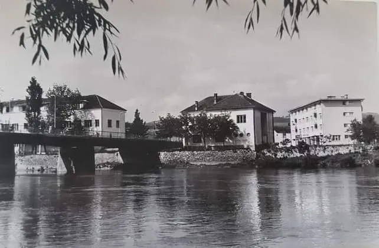
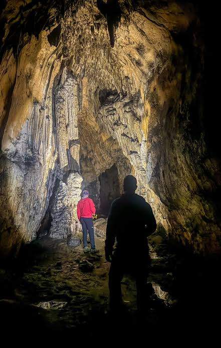
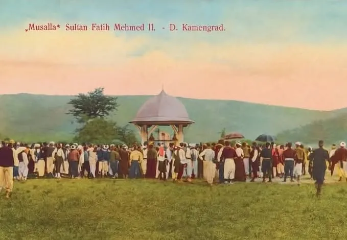
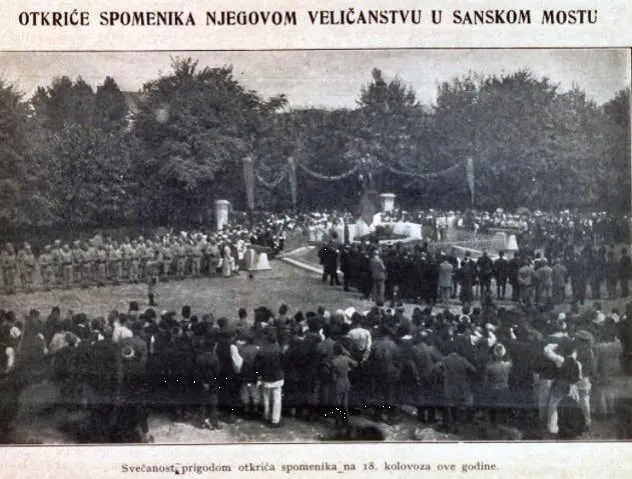
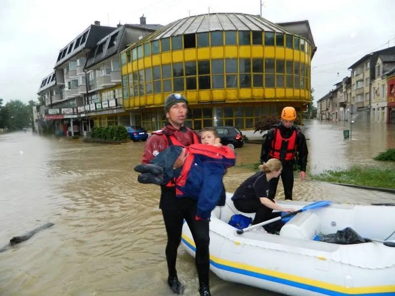

Historija
Pet hiljada godina
uz Sanu
Od pećine u Hrustovu do grada uz most: kratka historija Sanskog Mosta u šest poglavlja, sa starim fotografijama.

~2600
pr. n. e.
I · Prahistorija
Prvi stanovnici
U Hrustovačkoj pećini, oko 12 km od grada, živjeli su ljudi vučedolske kulture. Nalazi iz nje dovoljno su osobeni da arheolozi govore o posebnom, hrustovačkom tipu te kulture, raširenom dolinama Sane i Une.
Hrustovački tip datira se u kasno bakarno doba, oko 2600–2500. godine prije nove ere. Nalazi se čuvaju u Zemaljskom muzeju u Sarajevu, a pećina je nacionalni spomenik Bosne i Hercegovine.
Mnogo kasnije ovim krajem žive Mezeji, ilirski narod koji rimski pisci smještaju između Sane i Vrbasa. Njihovo rudarsko središte Splonum bilo je negdje na Sani, ali još nije pronađeno. Rimljani su ih pokorili, stanovnike s utvrđenih gradina naselili u doline, a između Sane i Japre uredili rudarski distrikt.


12km
od grada do Hrustovačke pećine
~2600
godina prije nove ere: hrustovački tip vučedolske kulture
Splonum
mezejsko rudarsko središte „na Sani“, još nepronađeno
1374
II · Srednji vijek
Župe Sana i Mren
Prije dolaska Osmanlija ovaj kraj pripada dvjema srednjovjekovnim župama, Sani i Mrenu. Grad Mren bio je središte svoje župe, ali s osmanskim osvajanjem nestaje iz izvora.
Kamengrad, tvrđava na strmom brdu iznad Blihe, prvi put se spominje 1374. Tada je bio posjed knezova Babonića Blagajskih.


1498
–1878
III · Osmanski period
Musala, most i džamija
Kamengrad pada pod osmansku vlast krajem 15. vijeka. Predanje kaže da je sultan Mehmed Fatih ispod tvrđave klanjao na otvorenom; na tom mjestu nastala je musala, jedna od rijetkih na Balkanu.
Uz most na Sani nastaje utvrđeno naselje, u izvorima Džisr-i Sana („most na Sani“), po kojem grad nosi ime. S njegove kapije sačuvana je kamena ploča s natpisom. Osmanlije grade i mostove na Sani kod Tomine i Trnove; preko ostalih rijeka i potoka karavani su uglavnom prelazili gazom.
Nakon što Osmanlije krajem 17. vijeka izgube Ugarsku i Liku, u Krajinu dolaze muslimanske porodice iz tih krajeva. Neke porodice oko Sanskog Mosta, poput Budimlića, vode porijeklo iz Ugarske, a mnoga krajiška prezimena i danas postoje u Lici.



 NekadDanas
NekadDanas
1878
–1918
IV · Austro-Ugarska
Selo postaje varošica
Austrougarska vojska ulazi u Sanski Most 8. septembra 1878, bez borbe, nakon dvodnevnih borbi za Ključ. Novi grad počinje rasti na desnoj obali Sane.
Grade se zgrada kotara, kotarski sud, žandarmerija i gruntovnica, a otvaraju se prva apoteka i prve osnovne škole, u Sanskom Mostu i Starom Majdanu. Makadamski put Prijedor – Sanski Most – Ključ, dug 78 km, počinje se graditi 1879. Podgrmečka cesta prema Lušci Palanci i Bosanskoj Krupi gradi se od 1882. do 1894, a kasnije i uskotračna pruga prema Drvaru.
Dana 18. augusta 1915. otkriven je spomenik caru Franji Josipu I, podignut troškom građana i seljaka cijelog kotara. Tadašnje novine pisale su da je to prvi carski spomenik u Bosni i Hercegovini. Nova vlast srušila ga je već u decembru 1918.


- 1879784
- 18851 242
- 18952 035
- 19102 234
- 19212 411
1913
–1971
V · 20. vijek
Lopta, Sokolski dom i novi most
Prvu nogometnu loptu donio je u Sanski Most krajem jula 1913. Branko Juzbašić, student u Pragu i sin gradskog ljekara. Stariji mještani nisu bili oduševljeni mladićima koji satima trče za loptom, a Prvi svjetski rat prekinuo je igru. Godine 1922. osnovan je NK Sana.
Godine 1939. građani i općina grade Sokolski dom, među prvima takve vrste u Bosni i Hercegovini. U njemu je 1944, na Drugom zasjedanju ZAVNOBiH-a, donesena Deklaracija o pravima građana Bosne i Hercegovine. Zgrada je 1995. zapaljena, a zatim srušena.
Iste 1939. preko Sane je već stajao novi, betonski gradski most. Prema popisu iz 1971, općina Sanski Most imala je 62.102 stanovnika i bila je deseta po broju stanovnika od tadašnjih stotinu općina u Bosni i Hercegovini.


1913
prva nogometna lopta u gradu
1922
osnovan NK Sana
10./100
općina u BiH po broju stanovnika 1971.
Sana
VI · Grad i rijeka
Grad i rijeka
Sana je gradu dala ime, ali ga je i plavila. Knjiga „Sanski Most nekad i sad“ bilježi velike poplave od 1956. do danas.
Ljeti se na rijeci kupalo, a otvoreno prvenstvo grada u plivanju vodilo je oko 1000 m niz Sanu, od Slapova do Gradskog mosta. Posljednje je održano prije više od četiri decenije.
U julu 1902. u Sanskom Mostu izmjereno je 44,5 °C, drugi najviši julski rekord u Bosni i Hercegovini, iza Mostara.

Poplava u centru grada, stara fotografija 
Poplavljene kuće uz Sanu 
Spašavanje tokom jedne od novijih poplava 
Zaleđena Sana 
Veliki snijeg 
Kupanje na Sani 
Skok s drvenog mosta 
Skok s Mašinskog mosta 
Lovac, 1968.
Iz knjige „Sanski Most nekad i sad“
44,5°C
julski rekord iz 1902.
~1000m
plivalo se od Slapova do Gradskog mosta
1956
prva od velikih poplava u knjizi
Izvori
- Jasmin Zukanović, Sanski Most nekad i sad (2024): većina starih fotografija i podataka na ovoj stranici.
- Hamdija Kreševljaković, „Kamengrad“, Naše starine VI (1958): karta župa Sana i Mren.
- Tehvid Jakupović, 60 godina FK Podgrmeč (2004), sjećanja Slave Došena: prva nogometna lopta i prvi klubovi.
- Federalni hidrometeorološki zavod BiH i RHMZ Republike Srpske: julski temperaturni rekordi.
Ako ste autor neke od ovih fotografija ili znate ko jeste, javite nam se, da je potpišemo ili uklonimo.